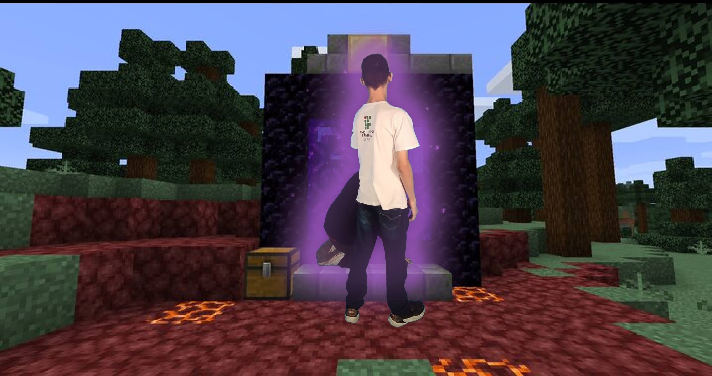
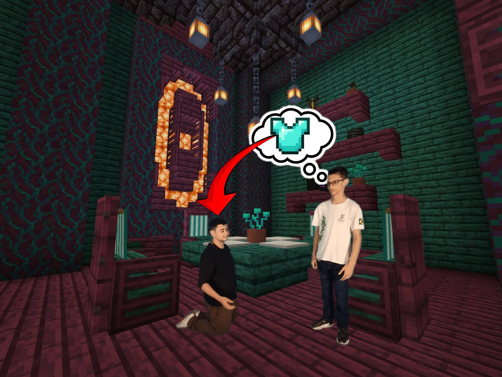
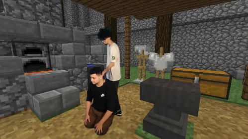
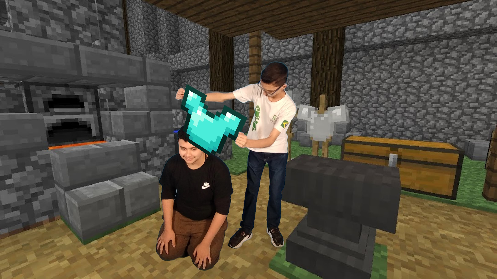
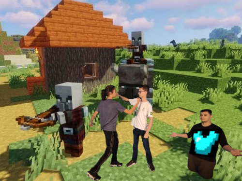
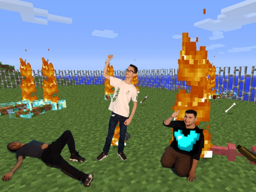

1. Cérbero sofre na batalha contra os titãns

2. Hades vendo o Cérbero sofrendo na batalha
3. Hades levando o Cérbero para um lugar

4. Hades e Cérbero caminhando para algum lugar
5. Hades e Cérbero em casa pensando em uma armadura
6. Hefesto analisando o Cérbero para fazer a armadura
7. Hades colocando a armadura no Cérbero

8. Hades e Cérbero chegando na batalha novamente
9. Hades e Cérbero começam a batalha contra os titãns
10. Hades e Cérbero vencem a batalha